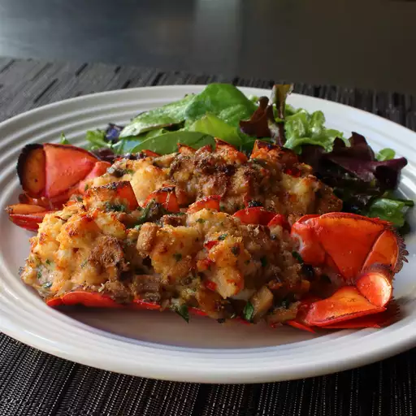

Chef John's Lobster Thermidor

Ingredients
- 4 (4-ounce) lobster tails
- 3 tablespoons butter, divided
- 2 tablespoons minced shallots
- Salt, to taste
- 1 1/2 cups diced mushrooms (Optional)
- 1 tablespoon all-purpose flour
- 2 tablespoons cognac or brandy
- 1/2 cup whole milk
- 2 tablespoons creme fraiche or heavy cream
- 1 tablespoon chopped fresh tarragon
- Cayenne papper, to taste
- 2 teaspoons fine dried bread crumbs
- 2 teaspoons freshly grated Parmigiano-Reggiano cheese
- 2 teaspoons melted butter
Steps
-
Cut bottom shell of lobster tails using kitchen shears
along each side where it meets the top shell;
do not remove the shell at this point
-
- Melt 2 tablespoons butter in a skillet over medium-high heat
-
Place lobster tails cut side down in the butter;
cook, covered, about 3 minutes.
-
Turn lobster tails over
(they are curved so will lean to 1 side);
cover and cook 1 minute
-
Lean them to the other side;
cover and cook 1 minute more
-
- Remove lobster tails from heat and transfer them to a bowl
- Remove any shell pieces from the skillet
-
-
Place 1 tablespoon butter in the skillet over medium heat;
add shallots and pinch of salt
- Cook and stir until pan starts to deglaze and shallots soften, 3 to 4 minutes
- Add mushrooms; cook stir until golden brown, 5 to 6 minutes
- Add flour; stir until mushrooms are coated and cook for 2 minutes
-
Pour in cognac; use a kitchen torch to flame cognac
to burn off alcohol (Will take just a few seconds)
-
Add milk; cook and stir until pan is completely deglazed
and milk begins to thicken and turn bubbly, about 2 minutes
- Remove milk from heat
- Stir in creme fraiche
- Let it cool
-
- Remove lobster meat from the shell, leaving top shell intact
- Remove any bits of bottom shell from the meat
-
-
Preheat oven to 450 degrees F (230 degrees C).
Line a baking pan with crinkled up foil
-
Make 4 channel-like indentations in the foil to hold
and stabilize the lobster tails as they bake
-
-
Slice lobster meat down the middle
and check for and remove any dark veins
- Chop into 1/2-inch pieces
- Transfer meat to a mixing bowl
- Add cooled sauce, tarragon, pinch of salt, and cayenne pepper
- Stir gently until well blended
-
-
Divide mixture among the lobster tail shells;
place in prepared foil-lined pan
-
Sprinkle each lobster tail with about
1/2 teaspoon bread crumbs and 1/2 teaspoon grated cheese
- Drizzle melted butter on the stuffed shells
-
Bake in preheated oven until
nicely browned and heated through, about 10 minutes.
If you like, you can turn on the broiler and broil
1 minute until tops are golden and crispy.